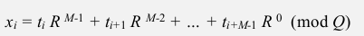
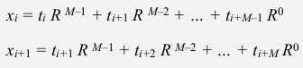

1. Introduction to substring search
"most ingenious algorithm we've seen so far"
pb. having two strings, pattern and text, len(pattern)=M << len(text)=N, try to find pattern in text.
ex. indexOf method of String in java.
2. Brute-Force Substring Search
function signature:
public static int search(String pat, String txt);
brute-force algo: look for pattern at every position of text.
public static int search(String pat, String txt){
int N=txt.length(), M=pat.length();
for(int i=0; i<=N-M; i++){
int j;
for(j=0; j<M && pat.charAt(j)==txt.charAt(i+j); j++);
if(j==M) return i;
}
return N;// not found
}
worst case: when txt/pat are repetitive → MN compares.

problem with brute-force: always backup when mismatch.

brute-force alternative
- j := number of matched chars in pattern
- i := index of the end of matched char in text
⇒ do explicite backup when mismatch by i -= j
public static int search(String pat, String txt){
int N=txt.length(), M=pat.length(), i=0, j=0;
while(i<N && j<M){
if(pat.charAt(j)==txt.charAt(i))
{j=i++; j++;}
else
{i=i-j+1; j=0}// <==backup
}
return j==M ? i-M : N;
}
challenge: want linear-time guarantee, and want to avoid backup.
3. Knuth-Morris-Pratt
"one of the coolest/trickiest algorithm covered in this course"
intuition
suppose pattern = "BAAAAA",
if we matched 5 chars in pattern and get mismatch on 6th char ⇒ we know the previous 5 chars are "BAAAA" → no need to backup the i pointer.
KMP algorithm: clever method that always avoid backup !
Deterministic finite state automaton (DFA)
- finite states ,including start and halt state, indexed by j in the subtring pb
- for each state: exactly one transition for each char in alphabet
ex.
states are 0~6, pat="ABABAC", transitions are indexed by chars in alphabet = {A,B,C}, finish if we reach state-6.
dfa[c][i]= the next state if we are currently in state-i and encoutered char-c.

interpretation of DFA for KMP algo
in the DFA after reading
txt[i], the index of state is the number of matched chars in pattern, or length of *longest prefix of pat that is a suffix of txt[0:i]. *
- need to precompute the
dfa[][]array from pattern - the pointer i never decrements (thus we can do it in a streaming manner)
→ if dfa[][] is precomputed, java code is very very simple:
public static int search(String pat, String txt, int[][] dfa){
int N=txt.length(), M=pat.length(), i, j=0;
for(i=0; i<N && j<M; i++)
j = dfa[txt.charAt(i)][j];
return j==M ? i-M : N;
}
running time: linear.
→ key pb: how to build dfa efficiently ?
DFA construction
- match transition (easy part)
when at state j, for the char c0==pat.charAt(j+1), just go on matching: dfa[c0][j] = j+1
ex. (pat="ABABAC")


- mismatch transition (hard part)
(for j==0, things are simple: dfa[c][0]=0 for all c!=pat[0])
- at state
j(ie. j chars in pattern are matched), and forc!=pat.charAt(j+1)- ⇒ we are in state j: we know the last j chars in input are
pat[0...j-1], and followed by char =c, so the last j+1 chars of input string is:pat[0...j-1]+c- ⇒ to compute dfa[c][j]: we can simulate as if we backup, ie.
i=i-j+1, j=0.- if we go back to set j=0, and set i = i-j+1, then i is pointing at
pat[1], the text becomepat[1...j-1]+c. We then let this string go through our dfa, the state that it achieves is the value ofdfa[c][j].
here is a concrete example:
pattern = "ABABAC", state j=5, char c='B'
- we know the last 6 chars of the input =
pat[0...j-1]+c="ABABA"+"B"="ABABAB"- if we backup, i will point to pat[1], the string is just
pat[1...j-1]+c="BABAB"- we use the string "BABAB" as input and go through the partially constructed dfa, and see that we will reach state 4
- so we know
dfa['B'][5]=4
similarly we can get dfa['A'][5]=1, as indicated below:
(pat="ABABAC")

one concern: seems this simulation needs j steps ?
⇒ can be changed to be constant time if we maintain a state X := the state of simulating of input=pat[1...j-1]
we maintain this state X, then for each mismatched char c, we just need to look at dfa[c][X].
(pat="ABABAC")

[Algo]
- set all matched transitions
dfa[c0][j] = j+1for allc0==pat[j]- fill first column (j==0):
dfa[c][0]=0for allc!=pat[0]- initialize
X=0(state for empty input string)- for j=1 to M:
- for all
c!=pat[0]: setdfa[c][j] = dfa[c][X](DP here...)- update
X=dfa[c0][X]⇒ 注意, 此时X并不等于X+1(最开始dfa[c0][j]=j+1不适用于此), 为什么? 因为c0==pat[j]而不是pat[X]!! 比如说最开始, j=1的时候X是等于0的!!! (这个弯我饶了好几分钟...)
java code (can be written to be more compate):
public int[][] constructDFA(String pat){
int R=256;//ASCII code
int M=pat.length();
int[][] dfa = new int[R][M];
// 1. fill matched transitions: dfa[pat.charAt(j)][j] = j+1
for(int j=0;j<M;j++)
dfa[pat.charAt(j)][j] = j+1;
// 2. fill 1st column --> can be ignored as java int default val=0
// 3. fill mismatched transitions
int X = 0;
for(int j=1;j<M;j++){
for(int c=0;c<R;c++)
if(c!=pat.charAt(j))
dfa[c][j] = dfa[c][X];
X = dfa[pat.charAt(j)][X];
}
return dfa;
}
running time and space: O(M*R).
prop.
KMP algorithm runs in O(M+N) time, and constructs the dfa in O(M*R) time/space.
这个KMP算法, 我曾经想过好几个小时, 然后最后写出了特别复杂的代码, 虽然可以用但是基本写了就忘掉了. 但是经过老爷子这么一讲, 感觉这次印象深刻了好多. 老爷子NB...
八卦时间:

4. Boyer-Moore
Heuristic in practice.
i does not necessarily go through all txt chars ⇒ i may skip some chars.
intuition
- for matching: scan chars from right to left (j will decrease when checking)
- when encoutered a mismatch: we can skip <= M chars (if the char is not in pattern)
ex. (pat="NEEDLE")

→ pb: how to skip?
mismatch character heuristic
note: the i always points to the beginning of the substring (txt[i,...,i+M-1]) to be checked for match.
case 1. mismatched char not in pattern
easy case → just move i to the right of this char.

case 2. mismatched char in pattern
heuristic: line up i with the rightmost char in pattern.
i += skip
where skip length = j - index of rightmost char in pattern

note: this does not always help, in the example below, i even backups:

to avoid backup, in this case we just increment i by 1 (heuristic doesn't help in this case).
implementation
use an array right[] as skip table, right[c] is the index of rightmost occurrence of char c (-1 if c not in pat).

int[] right = new int[M];
for(int i=0;i<R;i++) right[i] = -1;//value for chars not in pattern
for(int j=0;j<M;j++){
right[pat.charAt(j)]=j;
}
using this table we can implemente the heuristic algorithm:
public static int search(String pat, String txt, int[] right){
int N=txt.length(), M=pat.length();
int skip;
for(int i=0;i<N-M;i+=skip){
skip = 0;
for(int j=M-1;j>=0;j++)
if(pat.charAt(j)!=txt.charAt(i+j)){// when mismatch happens
skip = Math.max(1,j - right[txt.charAt(i+j)]);// skip if we can, else just increment i by 1
break;
}
if(skip==0)// if the above for loop finishes without changing skip --> we are done.
return i;
}
return N;// pattern not found
}
analysis
property. the Boyer-Moore heuristic (in practice) takes about N/M (sublinear!) compares to search.
好神奇, 比KMP还要简单的算法, 实际效率这么高...
worst-case performance: N*M... 这一点不如KMP.

→ can be improved...
5. Rabin-Karp
两个图灵奖的大神发明的算法..
intuition
basic idea: modular hashing
ex. for strings of numbers
- compute hash fcn (for number strings is easy: take the string and treat it as a number, then %Q where Q is a big prime number).
- for a pointer i →corresponds to the substring
txt[i, ..., i+M-1]→ check hash for match
(below: text=3141592653589793, pattern=26535)

computing the hash function efficiently
let ti be the ith char in txt, the hashcode for substring txt[i,...,i+M-1] is:

⇒ just an M-digit base-R integer modulo Q ! poly(M, R) % Q*. *
- Honor's method
linear time algorithm for evaluating polynomial.
recursive equation: poly(i, R) = poly(i-1, R)*R+ti
ex. (R=10, M=5)

private long hash(String key, int M){
long h=0;
for(int i=0;i<M;i++)
h = ( h*R + key.charAt(i) ) % Q
return h;
}
- if we know x_i, the x_i+1 can be infered:

⇒ x_i+1 can be computed in constant time:

⇒ we precompute R^(M-1) and maintain the hash number, and check for match !
public static int search(String txt, String pat){
int N=txt.length(), M=pat.length();
long pathash = hash(pat, M);
int RM = R^(M-1);// <-- pseudo code, store value of R^(M-1)
long txthash = hash(txt, M);// txthash will be maintained
for(int i=0;i<N-M;i++){
if(txthash==pathash && checkMatch(i,txt,pat))
return i;
txthash = ( (txthash - txt.charAt(i)*RM)*R + txt.charAt(i+M) ) % Q;
}
}
更新txthash的地方可能会有modulo造成的问题... 不过先这样写吧..
for collisions: Monte Carlo vs. Las Vegas
analysis
Theory: if Q is sufficiently large (~M*N^2), the probability of collision is ~1/N.
Practice: choose Q to be sufficiently large, and collision probability is ~1/Q.

Summery


Comments !